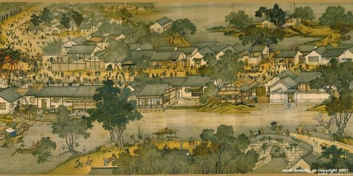
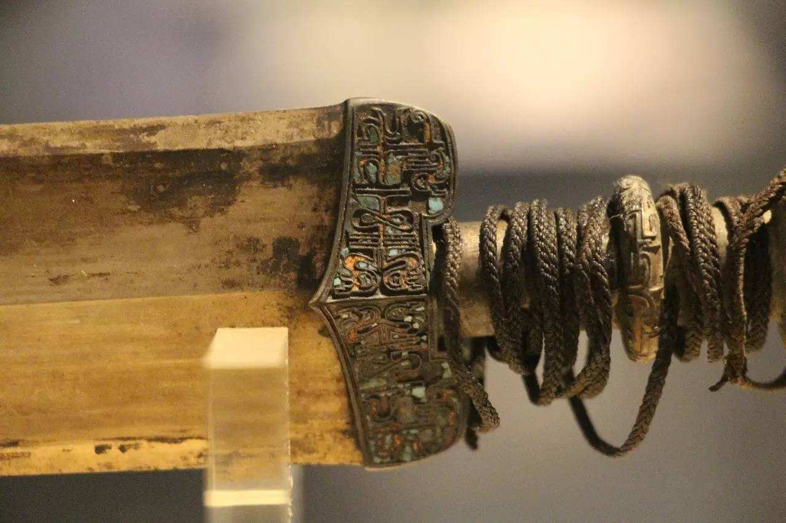

杭州历史网
- 
柳宗元带你领略盛世钱塘
- 
战国越王者旨於睗剑：剑中之精品，稀世之珍宝
三国两晋时期下的杭州政治制度

看破虏将军如何斩华雄、破董卓
那些发生在杭州城内的战事
| 人物 |
- 一代英豪孙策的文治武功究竟有多强，又为何突然死亡？ [2019/8/22]
- 统江东、破董卓，鲜有败绩，孙坚到底有多威猛？ [2019/9/15]
- 于谦：扶大厦之将倾，挽狂澜之既倒，救明于危难之间 [2019/9/11]
- 武林画派的创建者，一代画师——蓝瑛 [2019/6/14]
| 文物 |
- 带你亲眼目睹明朝鼎盛时期的青花瓷工业 [2019/6/14]
- 吴、越剑中绝无仅有的传世佳作 [2019/6/14]
- 中华五千年新石器时代文化的象征——良渚文化 [2019/6/14]
- 被杨宗稷夸赞为凤毛麟角的琴究竟有多好 [2019/6/14]
| 诗歌 |
- 跟随白居易的脚步，去江南寻觅专属于你的那份“江南忆” [2019/7/28]
- 务观由景而生的家国情怀 [2019/8/16]
- “东南形胜，三吴都会”,柳宗元带你领略盛世钱塘.... [2019/9/23]
- 回到一千年前，苏轼带你观赏如画西湖 [2019/8/12]
| 地理 |

- 秦汉时期杭州的疆域郡制 [2019/8/24]
- 三国两晋乱世之下的杭州 [2019/9/13]
- 唐宋时期下的杭州的政治地位迁谪 [2019/7/18]
- 明清时期的钱塘杭州 [2019/8/11]